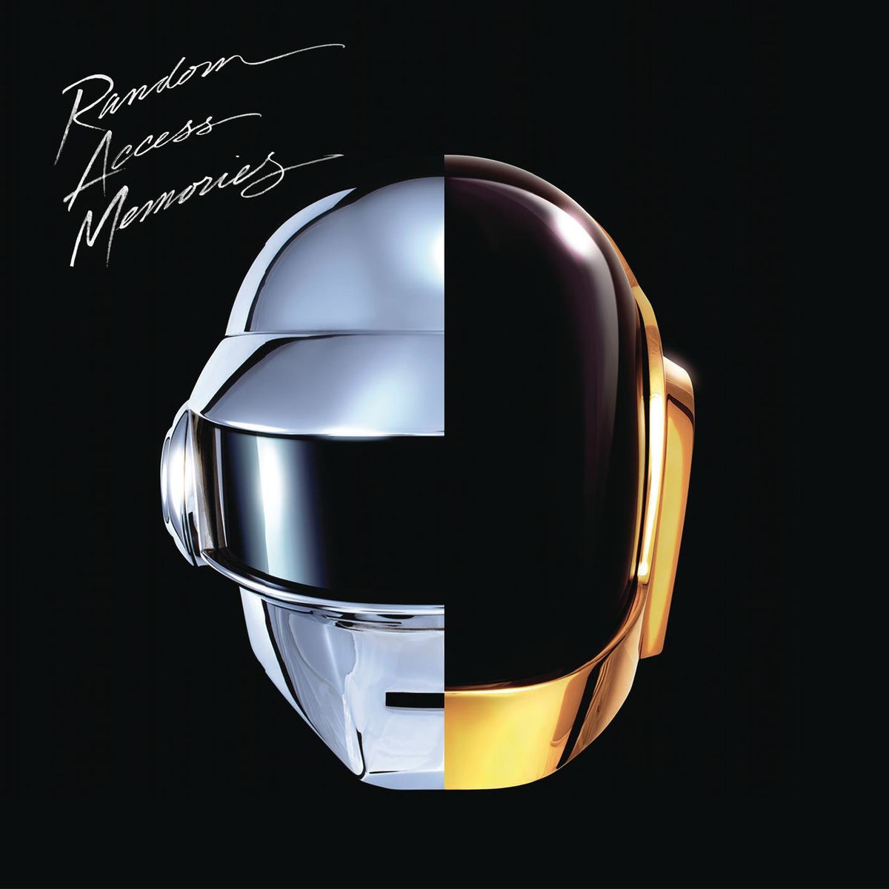

La idea de PULSE es crear una página donde se puedan encontrar distintos álbumes musicales y consultar información sobre ellos. Elegí este tema porque me interesa la música y me pareció una buena oportunidad para hacer un proyecto relacionado con algo que me gusta.
Cada disco va a tener su portada, nombre, artista, género y año de lanzamiento. La idea es que sea fácil recorrer la página y encontrar música de distintos estilos.
Estos son tres de los discos que elegí para mostrar en la página.
The Weeknd
2020 · Pop
Avenged Sevenfold
2005 · Heavy Metal

Daft Punk
2013 · Electronic
Además de mirar los álbumes, PULSE va a tener algunas funciones para que cada persona pueda utilizar su propia cuenta.
Buscar y recorrer discos de diferentes artistas.
Crear un usuario e iniciar sesión.
Guardar los álbumes que más te gusten.
También habrá una cuenta de administrador, que tendrá más permisos que los usuarios normales y podrá controlar el contenido de la página.
Una de las partes principales del trabajo va a ser el sistema de usuarios. Para utilizar ciertas funciones, cada persona tendrá que registrarse con sus datos y después podrá ingresar con su correo y contraseña.
El administrador tendrá un apartado diferente. Desde ahí podrá buscar usuarios, modificar algunos de sus datos y archivar o reactivar cuentas cuando sea necesario.
Los voy a utilizar para armar las páginas y todo su diseño.
Se encargará de procesar los datos y las funciones del sitio.
Va a guardar la información de las cuentas y los álbumes.
Para trabajar voy a utilizar Visual Studio Code y XAMPP. También usaré phpMyAdmin para manejar la base de datos.
La información se va a organizar en una base de datos MySQL. Por un lado estarán los datos de los usuarios y, por otro, la información de los discos.
En el caso de las imágenes, las portadas se guardarán en una carpeta del servidor. En la base de datos solamente se almacenará la ruta para poder mostrarlas después.
También hay que tener en cuenta la seguridad de las cuentas. Las contraseñas no se van a guardar como texto normal, sino utilizando las funciones de protección que ofrece PHP.
Además, se van a utilizar consultas preparadas con PDO para trabajar con la base de datos y se comprobarán los permisos antes de permitir el acceso al panel de administración.
Primero voy a terminar el diseño de las páginas y después empezaré a trabajar con la base de datos. Una vez que esté lista la conexión con PHP, voy a desarrollar el registro, el inicio de sesión y las funciones del administrador.
Por último, voy a probar las distintas partes del sistema para comprobar que funcionen correctamente y corregir los errores que puedan aparecer.